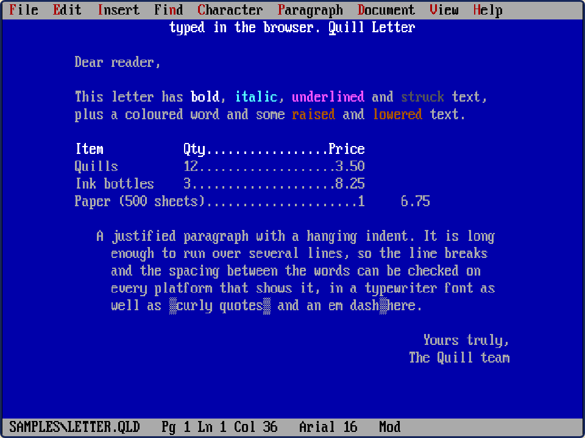

Try Quill
A real DOS program, running in this page. Select Start Quill and FreeDOS boots, asks which display you want, then opens a sample letter in Quill.
This is QUILLDOS.EXE, the same Rust code as Quill's Windows builds, built for a 1990s PC and started on FreeDOS 1.3 inside js-dos, a DOSBox that runs in the browser. Everything happens on your computer: nothing is uploaded, and the files you save stay on the emulated disk in this page until you reload or close it.
The default is DOS text mode, so you get the blue screen, the menu bar on the top row and the keyboard, not a mouse-driven window. FreeDOS's start-up menu also offers a graphics mode with real fonts: press 2 within four seconds of the menu appearing. Quill is experimental, and this is a demonstration, not a release.
The player
This browser can't run WebAssembly, which the player needs, so Quill can't start here. A current version of Firefox, Chrome, Edge or Safari will work. The screenshots show what you would have seen.
Not started. The player is about 2 MB and loads when you start it.

Keys
Select the screen first, so the emulated PC has the keyboard. The screen is a picture of an 80 by 25 text display, so it scales with the page.
- F10
- Open the menus; the arrow keys and Enter choose.
- Alt + a letter
- Open a menu by its underlined letter, such as Alt + F for File.
- Ctrl + F10
- Open the notes list.
- F7
- Check the spelling, in Canadian English.
- File > Exit
- Leave Quill for the FreeDOS prompt. Type
QUILLDOSto start it again, orQUILLDOS /Gfor the graphics mode.
Your browser may keep a few keys for itself, such as Alt on its own or F11. If an Alt shortcut does nothing, open the menu with F10 instead.
The two displays
Captured from this page, in Chromium, with the keyboard.

Text mode, after typing a line. js-dos on FreeDOS 1.3 
Graphics mode, chosen with 2 at the FreeDOS menu. js-dos on FreeDOS 1.3
What is running
- Quill is
QUILLDOS.EXE, built from this project's source for DOS, with the Canadian English dictionary, the sample documents and the fonts for the graphics mode. It carries its own DPMI host, so it needs nothing else. - FreeDOS 1.3 is the operating system: its kernel and command shell, unchanged, on a small floppy disk image. FreeDOS is free software, mostly under the GNU General Public Licence.
- js-dos 8.5.3 is the player: DOSBox compiled to WebAssembly. It is also under the GNU General Public Licence, version 2, and is served from this site, not from js-dos.com.
The licences and sources page names each part, where its source is and how the disk is made. The player makes no network requests of its own beyond the files above.